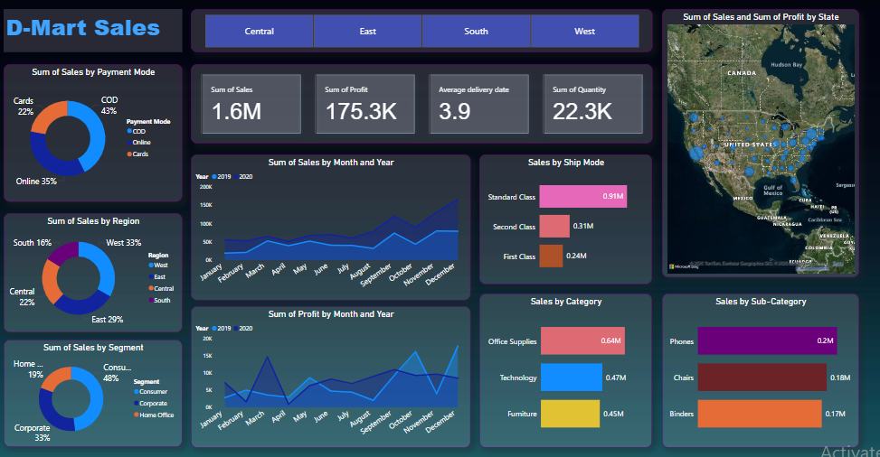

Data Analyst | SQL | Power BI | Excel | Python
Download ResumeAspiring Data Analyst with practical experience in AI-powered data extraction and a strong command of tools like Power BI, Excel, and SQL. Proven ability to clean, analyze, and visualize data to support business decisions. Eager to apply analytical thinking and technical skills to real-world challenges while continuously learning and contributing to data-driven growth.
HSC(Commerce)
– New English Junior College, Nagpur (2019-2020)
Graduation - B.Com in Computer Application
– Dr. Ambedkar Institute Of Management Studies And Research (Nagpur University) (2020-2023)
link- https://github.com/mayurbinkar/Power-BI-D-Mart-Sales-Dashboard
link-
Here is a sample of one of my Power BI dashboards:
Data Analyst Intern – Hubnex Labs (Mar–Sep 2024)
📧 mayur.binkar0108@gmail.com
🔗 LinkedIn Profile
💻 GitHub Portfolio